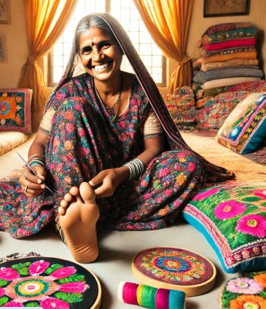

Welcome To English Project

The Inspiring Life and Works of Ila Sachani |
Ila Sachani is a special artist from Moti Vavdi village in Gujarat, India. She was born with a disability that makes it hard for her to use her hands. Even though she faced many challenges, Ila did not give up on her dream of creating beautiful art.
Early Life and Challenges
Ila grew up in a family that loved traditional crafts. Her mother and grandmother were very good at a type of embroidery called Kathiawar. This style is known for its bright colors and detailed designs. Even though Ila could not use her hands, she wanted to learn how to do embroidery too. With the help of her family, she practiced using her feet instead. This was difficult, but Ila was determined to succeed.
Discovering Her Talent
As Ila practiced, she created amazing pieces of art. She started by making things like cushions, bedcovers, and wall hangings for her family and friends. Everyone loved her work! Soon, people in her village began to notice how talented she was, and they started asking her to make special items for them.
Gaining Recognition
Ila’s big opportunity came when she joined a state exhibition that showed off local artists. Many visitors were amazed by her beautiful embroidery. This event helped Ila become well-known across the country. She received several awards for her talent, including the President’s Medal, which honors outstanding artists in India.
Empowerment Through Art
Ila’s story is not just about making art; it is also about being strong and independent. Through her embroidery, she found a way to earn money and support herself. She became a role model for many people with disabilities, showing them that they can achieve their dreams no matter what challenges they face. Ila often shares her story to inspire others to follow their passions.
Continuing Legacy
Today, Ila Sachani continues to create beautiful embroidery that people love to buy. She also teaches young girls in her village how to do Kathiawar embroidery. By sharing her skills, Ila helps other women learn and grow, giving them chances to express themselves through art.
CLICK here to go to Home screen